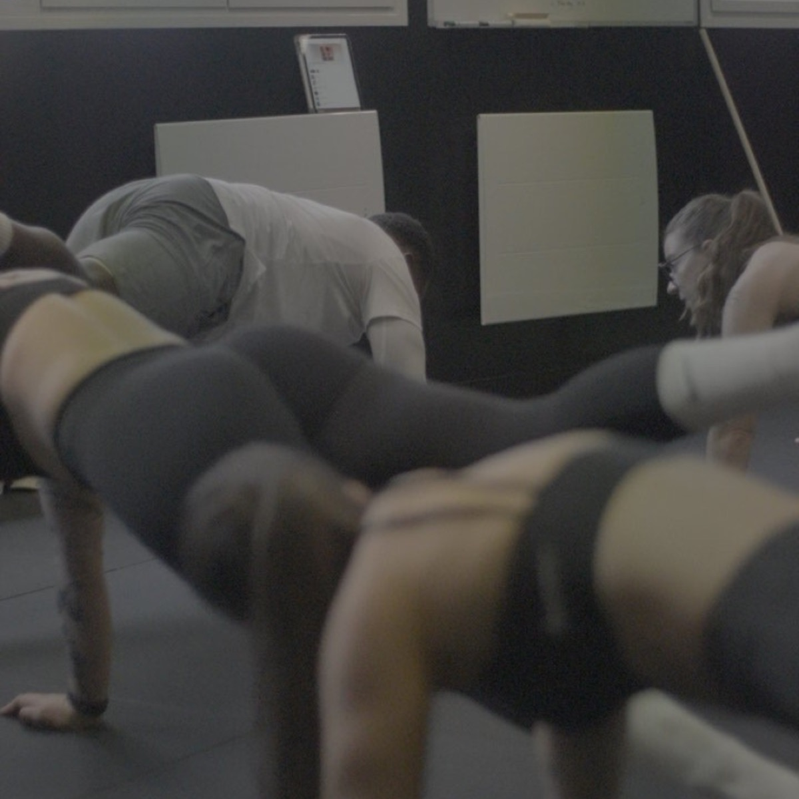

Renforcement musculaire : pourquoi c'est essentiel à tout âge
Bienfaits, risques de ne pas en faire, fréquence idéale et pourquoi se faire accompagner. Avec nos créneaux de renforcement au studio.
Lire l'article →Hyrox : comment se préparer à sa première course
Le format, les 8 stations, un programme sur 12 semaines et nos conseils pour le jour J. Tout ce qu'il faut savoir avant de vous lancer.
Lire l'article →D'autres articles arrivent bientôt. Suivez-nous sur Instagram pour ne rien manquer.